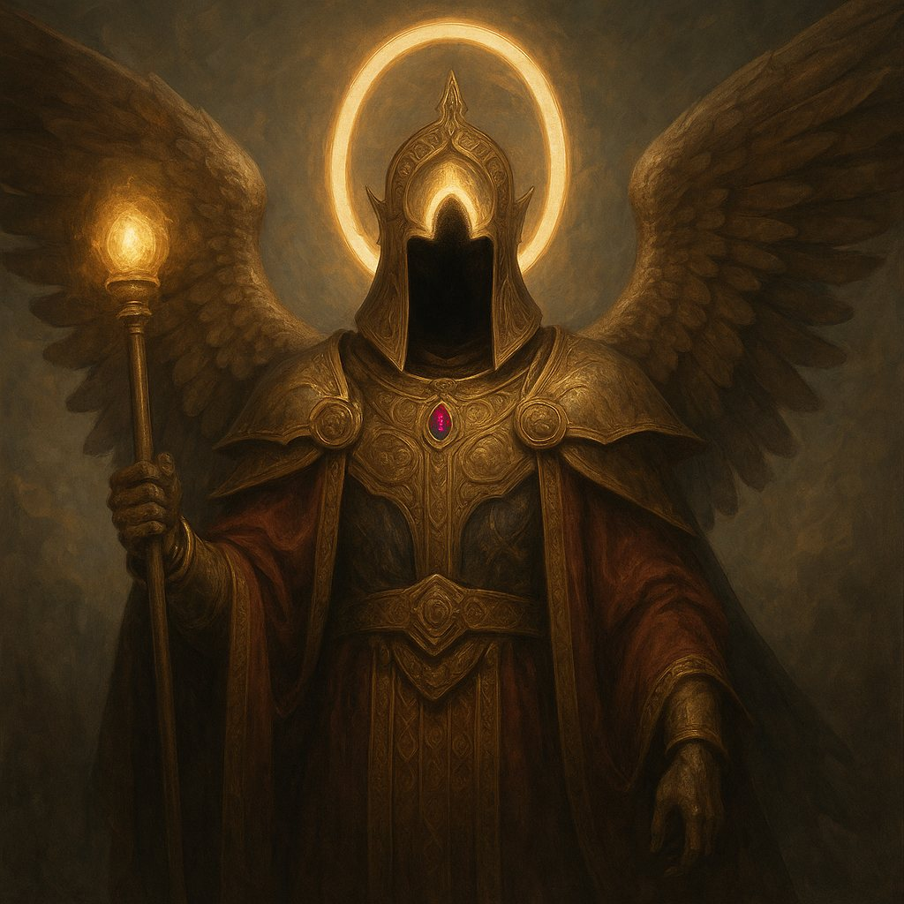
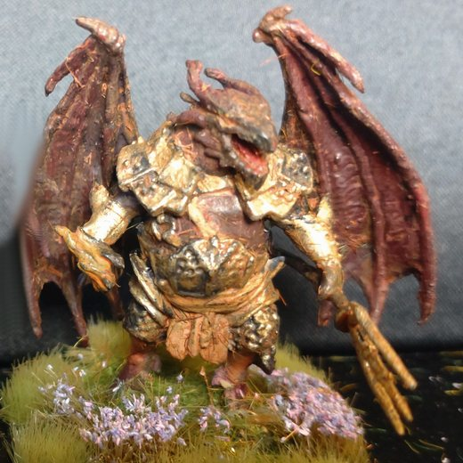
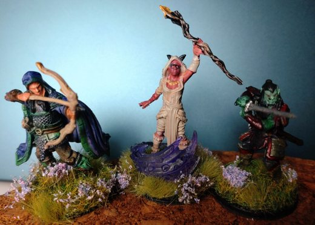

Arc 2 : L'archonte Cloaphilès

À Chrysophée, l'ancienne capitale en ruine, les héros déclenchent une bagarre à la taverne de la Couronne Brisée. La grosse Lulette leur en interdit l'entrée.
Aidés de Kaelis, ils retrouvent l'archonte Cloaphilès, prisonnier d'une distorsion temporelle : un sort d'invocation de démon avait été interrompu. Azog termine l'invocation du démon Epharel et, avec son aide, dérobe l'auréole de Cloaphilès. Silenna et Cloaphilès sont terrassés avec le concours du démon, et les héros prennent sur Silenna le rubis de Wayland. ⚑ Le prix du démon Epharel
Pendant le combat, le Voïvode Brancovan dérobe la couronne du Roi-Idiot, qui était maintenu en non-vie par magie. Le Roi-Idiot se décompose alors pour de bon.



